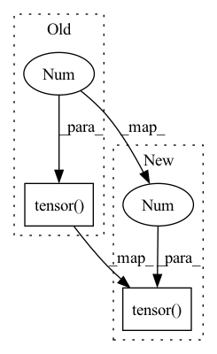

Pattern ID :1598

Before Change
has_local, has_global = map(lambda x: x.shape[1] > 0, (lqk, qk))
out = []
total_loss = torch.tensor(0., **to(x))
if has_local:
local_out = self.local_attn(lqk, lqk, lv, input_mask = input_mask)
out.append(local_out)
After Change
has_local, has_global = map(lambda x: x.shape[1] > 0, (lqk, qk))
out = []
total_loss = torch.tensor(0., **to(x)).requires_grad_()
if has_local:
local_out = self.local_attn(lqk, lqk, lv, input_mask = input_mask)
In pattern: SUPERPATTERN
Frequency: 3
Non-data size: 2
Instances
Fragment ID: 6501671
Project Name: lucidrains/routing-transformer
Commit Name: 34244958ff1c434606481afbe14c63d7d3a7d60c
Time: 2020-05-25
Author: lucidrains@gmail.com
File Name: routing_transformer/routing_transformer.py
M Class Name: SelfAttention
N Class Name: SelfAttention
M Method Name: forward(3)
N Method Name: forward(3)
M Parent Class: nn.Module
N Parent Class: nn.Module
M File Name: routing_transformer/routing_transformer.py
N File Name: routing_transformer/routing_transformer.py
M Start Line: 494
M End Line: 508
N Start Line: 494
N End Line: 508
'>
Before Change
has_local, has_global = False, True
out = []
total_loss = torch.tensor(0., **to(x)).requires_grad_()
if has_local:
local_out = self.local_attn(lqk, lqk, lv, input_mask = input_mask)
After Change
has_local, has_global = False, True
out = []
total_loss = torch.tensor(0., requires_grad=True, **to(x))
if has_local:
local_out = self.local_attn(lqk, lqk, lv, input_mask = input_mask)
out.append(local_out)
'>
Fragment ID: 6501668
Project Name: lucidrains/routing-transformer
Commit Name: 2042adb06111339b86814500f0c389759b8f6cdf
Time: 2020-05-27
Author: lucidrains@gmail.com
File Name: routing_transformer/routing_transformer.py
M Class Name: SelfAttention
N Class Name: SelfAttention
M Method Name: forward(5)
N Method Name: forward(5)
M Parent Class: nn.Module
N Parent Class: nn.Module
M File Name: routing_transformer/routing_transformer.py
N File Name: routing_transformer/routing_transformer.py
M Start Line: 582
M End Line: 596
N Start Line: 556
N End Line: 556
'>
Before Change
labels = torch.zeros_like(classification, device=device)
class_loss_total.append(weighted_binary_focal_loss(
classification, labels, self.alpha, self.gamma, reduction="sum"))
reg_loss_total.append(torch.tensor(0.))
continue
// ---------------------------------------- class_loss
iou, matched = box_iou(anchors, boxes_ori).max(dim=1) // 每个anchors只能对应一个boxes
After Change
labels = torch.zeros_like(classification, device=device)
class_loss_total.append(weighted_binary_focal_loss(
classification, labels, self.alpha, self.gamma, reduction="sum"))
reg_loss_total.append(torch.tensor(0.).to(device))
continue
// ---------------------------------------- class_loss
iou, matched = box_iou(anchors, boxes_ori).max(dim=1) // 每个anchors只能对应一个boxes
'>
Fragment ID: 6501672
Project Name: jintao-huang/efficientdet_pytorch
Commit Name: f8166ea480c202b787c7d131e35e5f5db61dfdf8
Time: 2020-05-24
Author: hjt_study@qq.com
File Name: models/loss.py
M Class Name: FocalLoss
N Class Name: FocalLoss
M Method Name: forward(5)
N Method Name: forward(5)
M Parent Class: nn.Module
N Parent Class: nn.Module
M File Name: models/loss.py
N File Name: models/loss.py
M Start Line: 77
M End Line: 92
N Start Line: 67
N End Line: 95